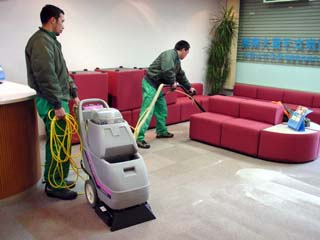
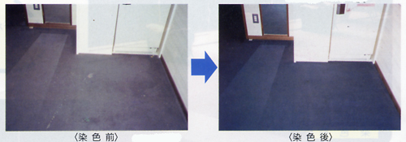

地毯沙發塵螨過敏
※許多過敏源都來自地毯及沙發，因此除了定期吸塵以外，必須要有定期清潔消毒之措施，才能保持使用者之健康。
※以多年未清潔之沙發及地毯是比較不好清理的項目，沙發有分皮面及纖維布面兩種，地毯有分天然與人造，一般辦公室都以人造纖維為主，目前許多公共場所因消防法原因，還需要有防燄功能，以下就依其材質簡介日常保養其清潔方法。
清潔消毒


其結構為外層為布料面，內層為發泡材質具有回復的效果，通常都具有良好的吸水性，最佳方法是如果可以，將其布面拆下清洗，內部則用吸塵，並給太陽曬2小時以上，市面上有賣許多發泡型的泡沫沙發清潔劑，但實際來說，它卻不適用大多數的沙發，因為大部份沙發都是積了許多陳年污垢及細小灰塵，都在其纖維底部或是發泡綿內，它只能清除表面污垢，當清理完後其表面為濕潤的，但又因為毛細孔作用將底部微小污垢吸起，因此造成許多嚴重水痕。
需專業的清洗工具(方法)可清洗乾淨最佳，水是乾淨度之重要因素，是然而當水用的越多，就越不容易乾燥，甚至造成內部發霉異味四起，所以在日常保養中，布面沙發是要常常吸塵，必免細小灰塵侵入纖維底部，日後清潔才會容易，在清洗擦拭時使用熱水，或是用蒸氣方法，先將汙垢溶解，(如果家中沒有專業蒸氣清洗機，可用蒸氣熨斗將其蒸氣燻蒸)，再用乾淨毛巾反覆將上面殘餘清潔劑擦拭即可，等乾燥後，可在市面上買到布料潑水防護劑，它可以降低污垢侵入纖維的速度。
有分人造皮及真皮兩種，皮面的好壞除了本身材質外，很重要的是在於皮面染色加工部份，在清洗方式還是需看其皮面加工材料而定，勿用菜瓜布刷洗。
通常都是使用於辦公及電影院、飯店中，優點是耐磨性佳、抗燃，通常比較好的地毯在出廠前都做過抗污防水處理，因此日常必需以吸塵做基本維護，在清洗時以半乾式清洗法為主，一台低轉速洗地機，配上仿羊毛布刷，以及蒸氣機，做主要清洗工具。
一般使用於家庭或飯店中頂級總統套房中，觸感佳，通常為長毛居多，無法全面使用高溫熱力法(如高溫蒸氣)，因此其清洗法以室溫的水及溫和清潔劑及低壓蒸氣為主。
